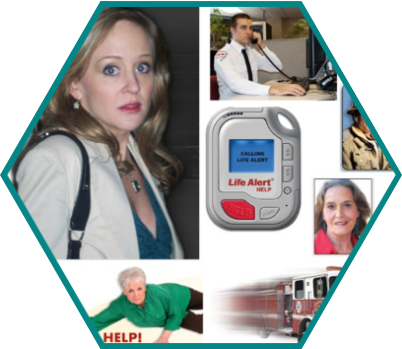

LifeAlert
LifeAlert is known around the world as the company that spawned the "help I've fallen and I can't get up" joke.
In the brief from our instructors, we were tasked with "improving the existing digital solutions for current customers" at LifeAlert. We realized that it was going to be very difficult for LifeAlert to expand their user base with such a negative brand perception, especially with friendlier competitors entering the medical alert device market.
This realization made us re-evaluate the problem statement in the brief we were given. Talking to instructors, we decided that it was appropriate to shift our focus to altering the public perception of the LifeAlert brand by revamping the website and improving potential customer education to build trust in the brand.
Based on the personas we developed, we also identified the core human concerns that each persona represented - remaining active, independent, and secure. This was a breakthrough moment that gave us a great push to develop the "lifestyles" aspect of the site, which also piggybacked on design triggers like appealing to values and chunking.
This detailed understanding of our personas allowed us to recreate the Information Architecture of the LifeAlert website in ways that our personas would be able to understand. We wanted to have an underlying structure that would be simple and clear, while directing users in a flow through education to purchase regardless of their entry point on the site.
Due to the time constraints on the project, we weren't able to accomplish all of the restructuring we had planned. Our design is flexible and allows for additional sections.
As a way to quantify the changes we could make to the site, we did an informal Site Audit of the current LifeAlert website. We were able to identify more than a dozen fonts on a single page, inconsistent image size and format, use of negative images, and an alarming color scheme.
This Site Audit gave us a good idea of how and where to start with the design. We combined this with the survey responses about what information users would expect to be able to find on the site.
I collaborated with two other classmates, Jacob Swift and Swapna Kulkarni, on every aspect of this project. Our first task was to gather user research about how the service is used, as well as evaluating LifeAlert's current digital offerings.
We each took charge of areas of our own specialty. Swapna took on the persona and storyboard sketches, and market research and analysis. Jacob led the user testing side, and was able to create a Net Promoter Score from the responses we got. I wrote user surveys, created wireframes and mockups, analyzed the current information architecture, built a new site map and user flows, and integrated psychological design triggers into our design.
Omnigraffle, Invision, Zurb Design Triggers, Google Drive.
{kind=link}
{kind=link}
{kind=link}
{kind=link}
It was difficult at first to find users, especially on our two-week time frame. However, we hit the pavement and were able to find a number of friendly people on the street who were happy to share their ideas and experiences with medical alert devices.
We also looked into reports about web browsing and buying habits from the likes of AARP and Deloitte, compared the offerings of other medical alert device companies, and did some prototyping with users.
Although the original brief asked for improved digital solutions for current subscribers, our research indicated that there was an opportunity to make a bigger impact by reaching out to people who are not currently users. From that research, we identified three main groups of users which eventually became our three personas of Brad, Cathie, and Edith.
Each of these personas addressed an issue with the current perception of LifeAlert, and allowed us to frame our re-branding through their experience. While digging deeper into the motivations for these personas, we came up with the three main groupings that we present on the new LifeAlert home page : staying active, being safe, and living independently. When we took these concepts back to users, they resonated well. We finally had the ideas we needed to move forward.